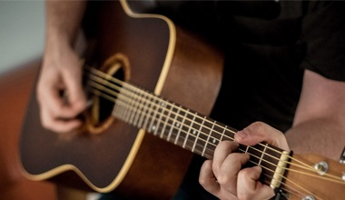
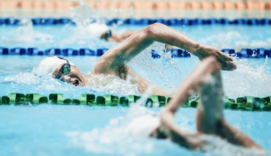

Reading
I learned how to read when I was 4 and have never stopped since. I read everything, from thrillers to science fiction and have yet to encounter a book that does more harm than good to me and my mind.
Exercise
I take my physical well-being almost as seriously as my mental one. I love working out and keeping fit year-round, but have never really payed much attention to it. It's more of a habit than a hobby at this point.
Playing the guitar
I started learning music theory and instruments when I was 13 years old. I only took classes for 2 years but continue to play on occasion to this day.

Swimming
Although it can be considered as a form of exercise, I enjoy swimming the most and I feel it deserves its own category. I swam competitively for a brief period too.

Tutoring
What started as simply helping a few of my high-school friends pass their math exams slowly grew into a small business. Word quickly got around and I currently have around 12 pupils I work with regularly.